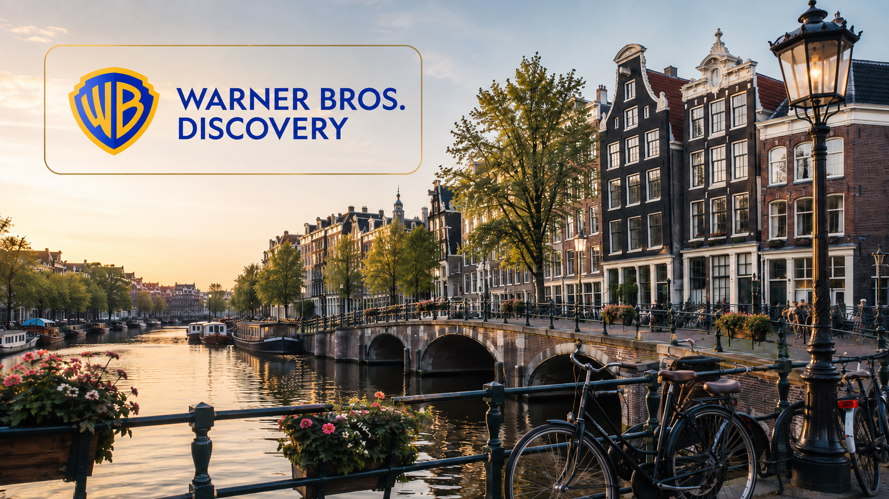
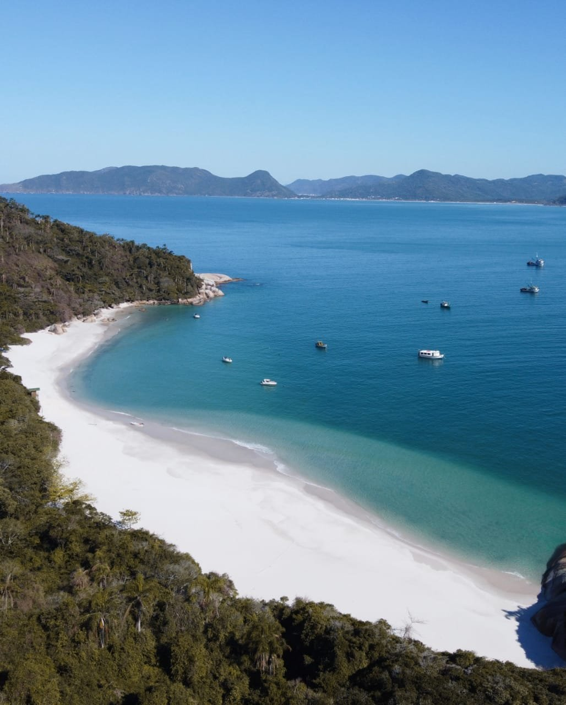
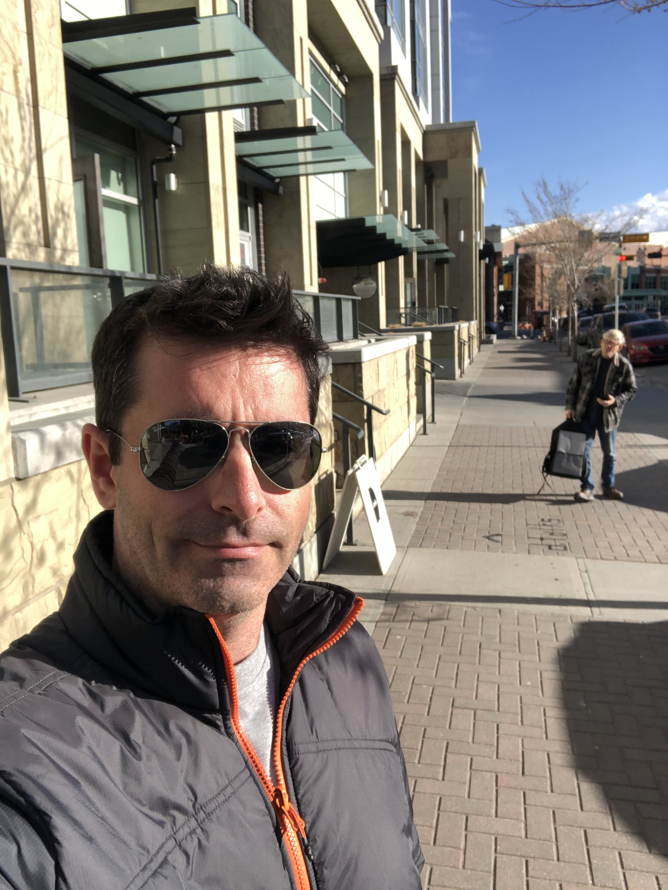
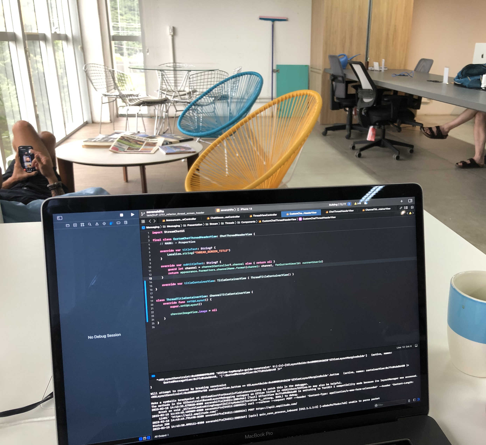
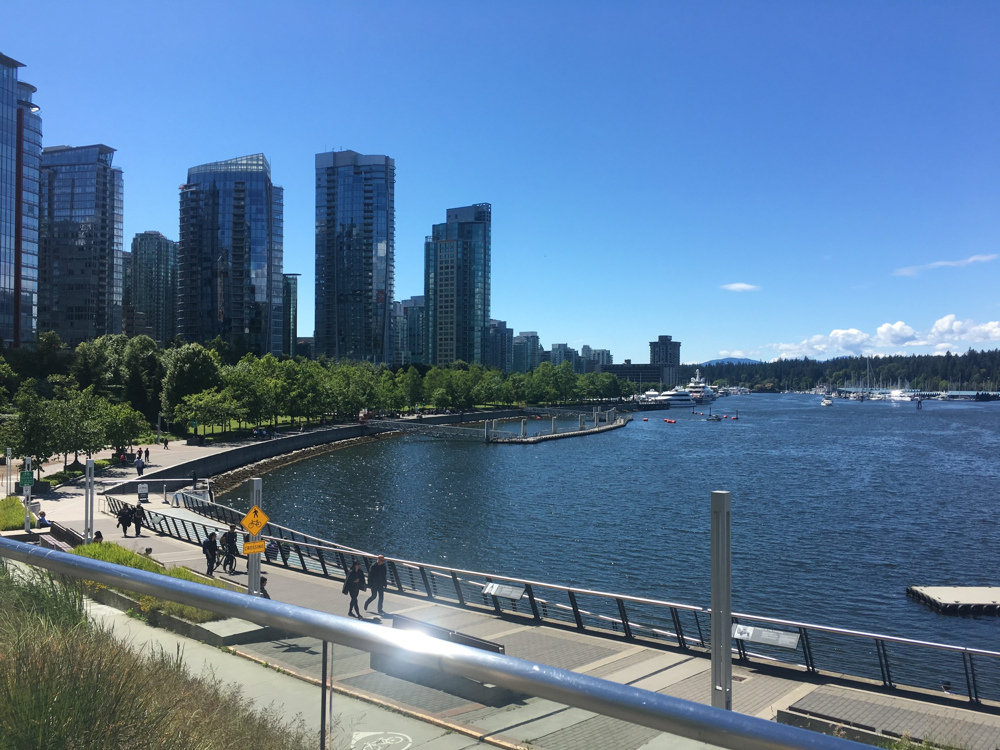
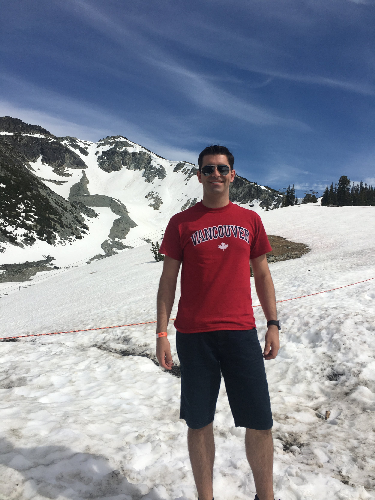
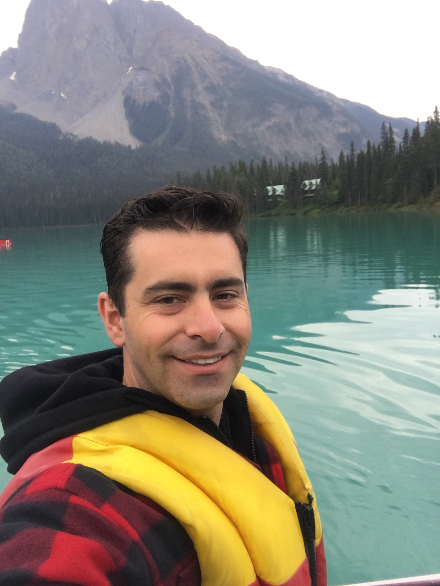
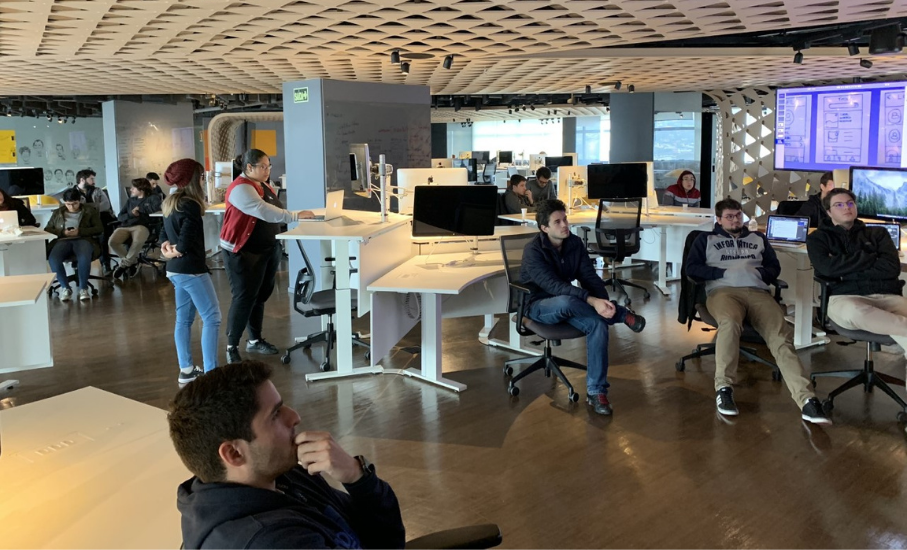
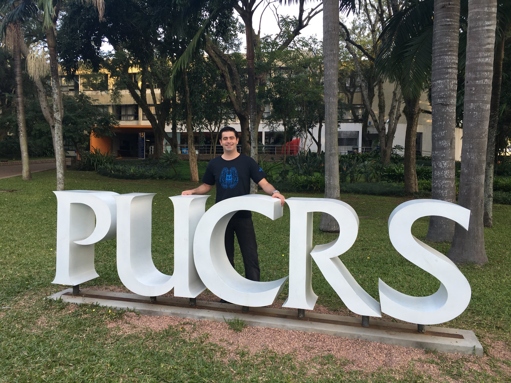

A taste of my journey
8. A New Chapter - Amsterdam
(June. 2026)

In July 2026, I began an exciting new chapter by relocating to the Netherlands and joining Warner Bros. Discovery in Amsterdam as an Engineering Manager. After many years of growing as an iOS engineer and technical leader, this opportunity represents an important evolution in my journey—moving from primarily building technology to leading people, shaping engineering strategy, and helping teams succeed.
Living in the Netherlands has given me the opportunity to experience a new culture, connect with people from around the world, and continue expanding my global perspective. Professionally, I am excited to empower engineers, build high-performing and inclusive teams, improve how we deliver products, and transform technology into a growth engine that creates meaningful value for customers and the business.
This chapter brings together many of the goals I have pursued throughout my career: living abroad, working in an international environment, growing as a leader, and helping others reach their full potential.
7. Back to Florianópolis
(Feb. 2024)

In February 2024, I decided to return to Florianópolis, a city that has always held a special place in my heart. The lower cost of living compared to Canada allowed me to adjust my investments and focus on a sustainable financial future.
Back in this beautiful beach city, I reconnected with nature, enjoying morning ocean sounds and lush trails. I also had the chance to dive back into my personal projects, finding renewed creativity and purpose. Florianópolis provides the perfect environment for both personal and professional growth.
6. Achieving My Goal:
Working in Canada

After applying to several companies worldwide, I secured job offers from four, including 7shifts, a Canadian company. Choosing 7shifts was a strategic move that fulfilled my goal of moving to Canada.
Living in Calgary was an adventure filled with both challenges and joys. The cultural differences were eye-opening, and adapting to a new environment tested my resilience and adaptability. On the other hand, the vibrant community and stunning landscapes made every day an exciting experience. Professionally, working again for a North American company allowed me to collaborate with talented individuals, further expanding my skills and knowledge. It was a period of immense growth, both personally and professionally, making it one of the best experiences of my life.
5. Career Milestone: PayPal

Starting at PayPal was a significant turning point for me. Although I already knew English, working there helped me master business English, greatly impacting my career.
Working for a North American company like PayPal has its perks. I had the opportunity to work with talented professionals worldwide, learning from their experiences and broadening my perspective.
One of the most rewarding aspects was the global impact in my carrer. Knowing that our solutions were used by millions worldwide was incredibly motivating and gave me a strong sense of purpose and accomplishment.
4. Returned to Brazil

When I got back to Brazil, I moved to Florianópolis, a city known for its beautiful beaches. This move was strategic since many international companies hire talent from here, aligning perfectly with my goals.
3. The Next Goal: Interchange project



Determined to live and work abroad, I decided to fund my own exchange program.
In 2018, I spent two months in Vancouver, Canada. I fell in love with the city and the country. The culture shock was real—people were so polite and respectful, and I felt incredibly safe compared to Brazil. I learned a ton and made a promise to myself: "I’ll be back someday to live in Canada."
2. Apple Developer Academy

Photo: Tecnopuc/Release
The Apple Developer Academy was a game-changer for me. It was a 1.5-year program with PUCRS University and Apple, where I developed a deep appreciation for user experience and its lifecycle. The program also offered amazing international connections and insights from Apple experts. There was a bit of a snag, though—my English wasn’t good enough to get me to WWDC, which really pushed me to improve. I promised myself that language would never be a barrier again and that I’d seize every opportunity that required English.
University Days

During my university years, I tried out a bunch of different fields. I kicked things off with web development, which was my first dive into the tech world. Then, I got into Java, a crucial part of my programming journey. I even completed a two-month Android development course to mix things up a bit.
Feedback is the key
jadernunes.jbn@gmail.com
+55 (48) 99123-8409